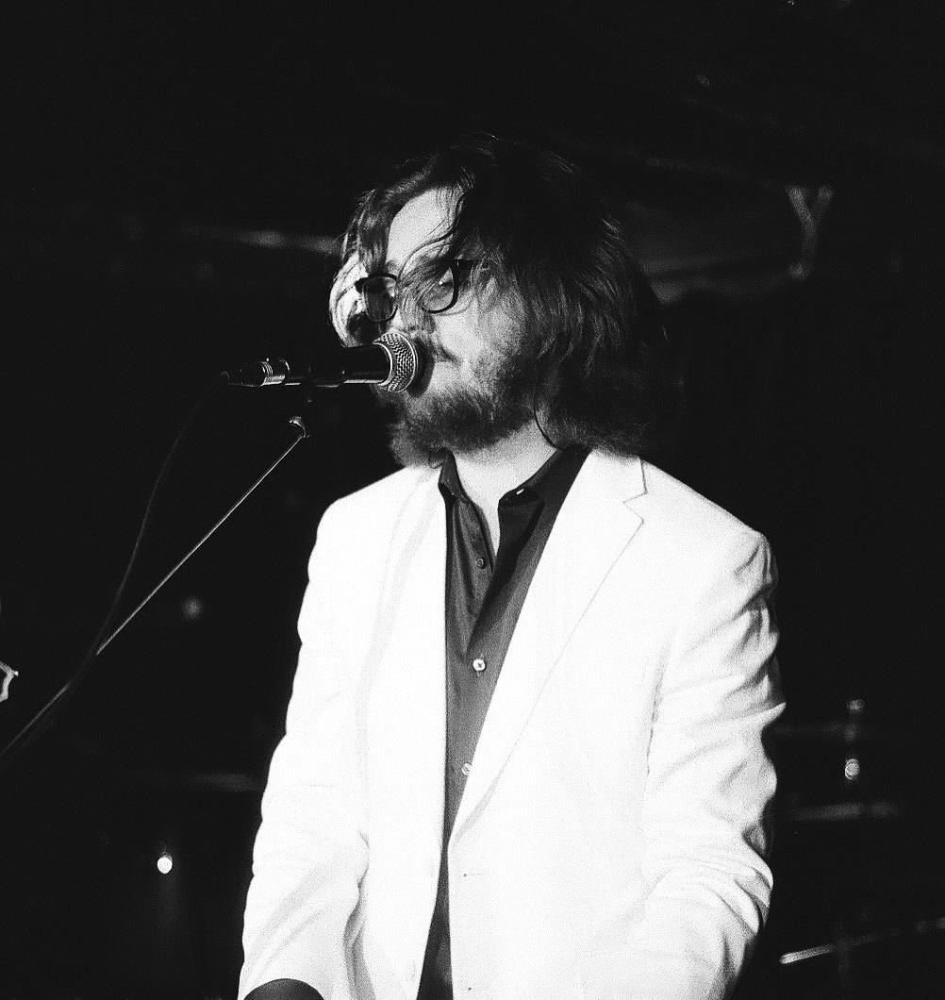
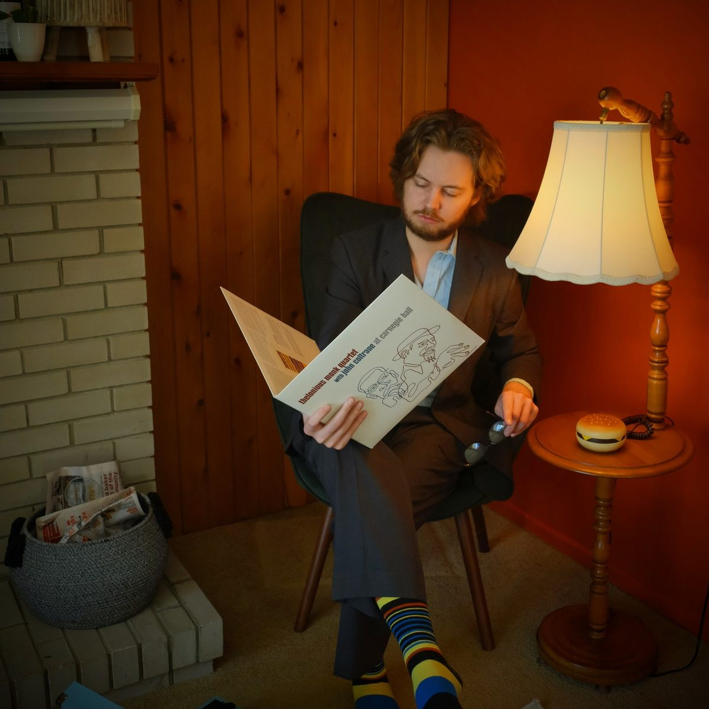
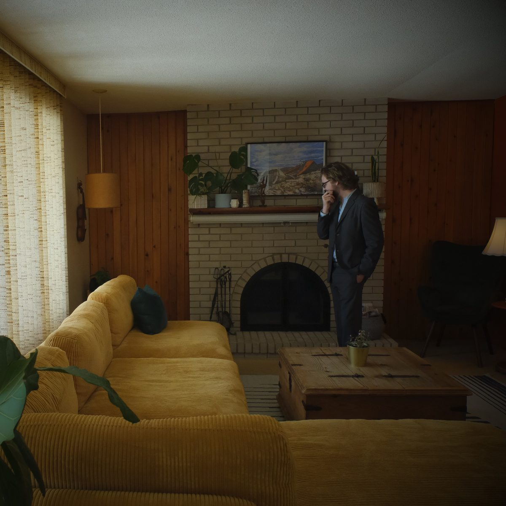
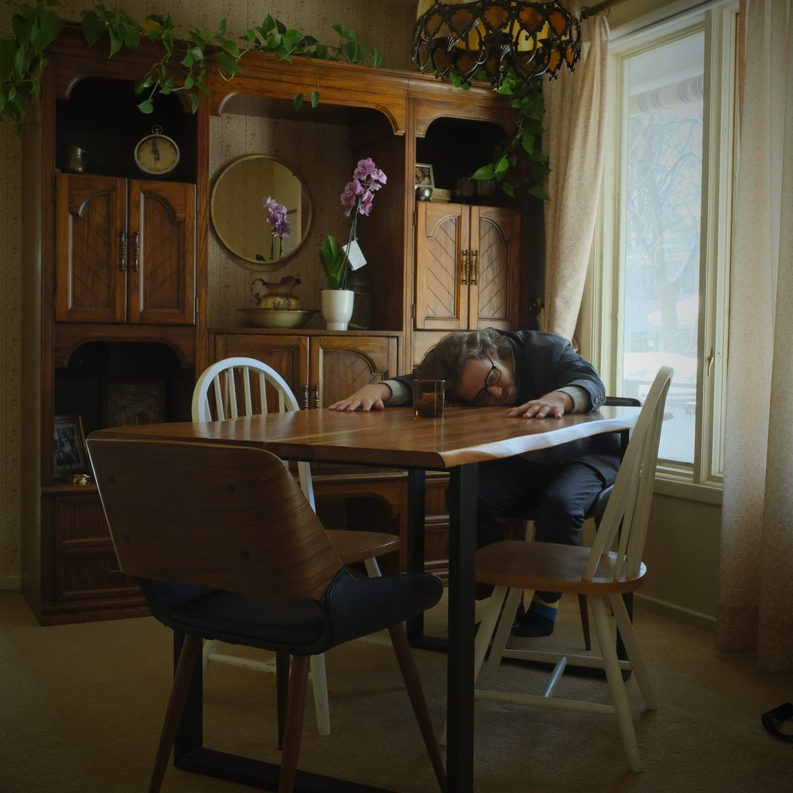
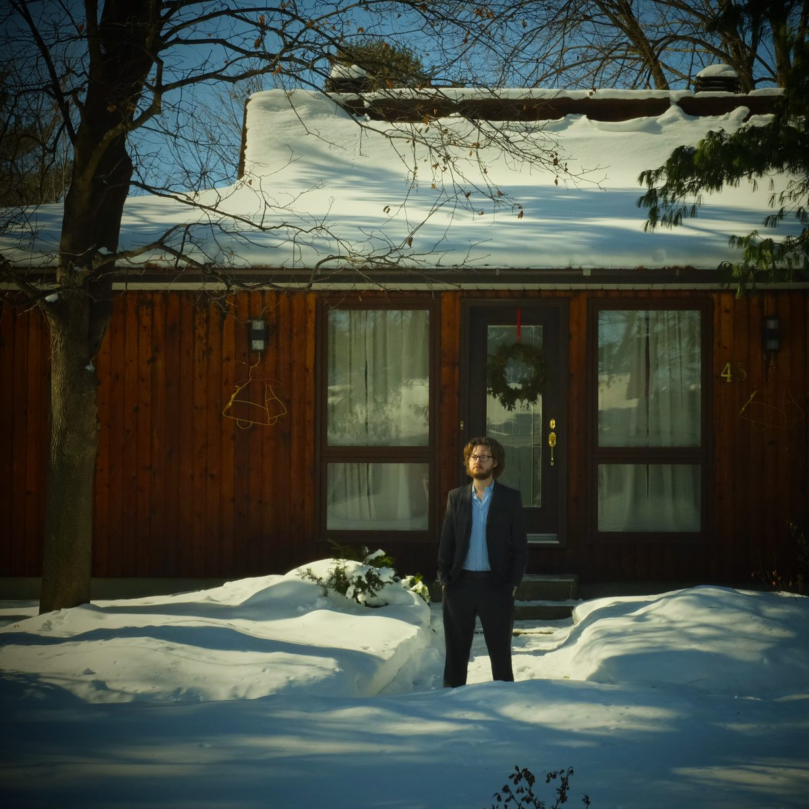

01
Pianist
Piano and keyboards, from the classical repertoire to five decades of British pop and rock.

Track 01


Track 02


Track 03
A classically trained pianist and composer with a degree in performance and composition from the University of Ottawa, who went on to add pop, rock and alternative to his playing.
01
Piano and keyboards, from the classical repertoire to five decades of British pop and rock.
02
Trained in composition at the University of Ottawa, writing for the piano and beyond.
03
Writes and performs his own songs.
On keyboards with
A five-piece Ottawa cover band founded in 2009, playing five decades of British music, “80s and beyond”.
Asher Darling, keyboards · Graeme Weeks, vocals · David Little, lead guitar · Nathan Hoedeman, percussion · Martin Newman, bass
wearethestart.ca (opens in a new tab)